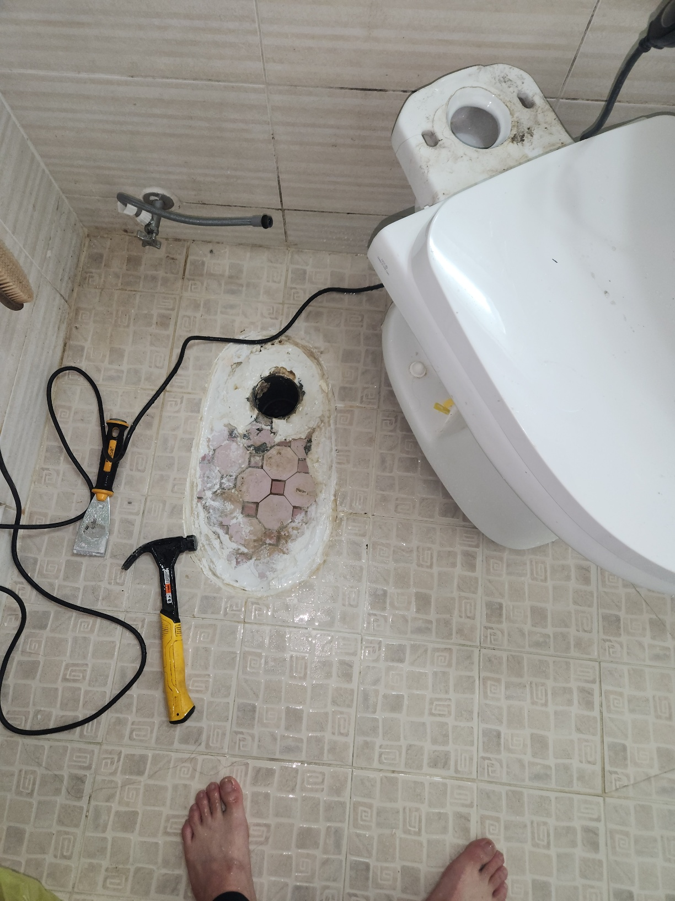

아래층 천장에 누수 흔적이 생겼다는 신고를 받고 위층 화장실 바닥 배수구 주변을 확인한 현장입니다. 위층에서는 별다른 이상을 느끼지 못하고 계셨는데, 아래층 천장 얼룩 위치를 기준으로 대략적인 지점을 먼저 가늠하고 점검을 시작했습니다.
오래된 유가(바닥 배수구) 주변 방수층이 삭아 있었습니다. 유가는 화장실 바닥 물을 하수관으로 흘려보내는 배수구인데, 이 주변은 물이 가장 오래 고이는 자리인 만큼 방수층이 손상되면 바로 아래층 누수로 이어지는 경우가 많습니다. 배수구 주변 타일과 방수층을 걷어내고 확인해 보니 유가 자체도 오래돼 이음부가 헐거워져 있었고, 이 틈으로 물이 조금씩 아래로 흐르고 있었습니다.
노후된 유가를 새 제품으로 교체하고, 주변 바닥에는 방수재를 여러 차례 덧발라 완전히 밀착되도록 시공했습니다. 방수 작업은 한 번에 두껍게 바르는 것보다 얇게 여러 번 덧발라 굳히는 방식이 훨씬 견고합니다. 작업이 끝난 뒤에는 물을 채워 배수 상태와 방수 여부를 함께 확인하고 타일 마감까지 정리했습니다.
유가 주변 방수층이 손상되면 물이 새는 것 외에도 배수구 틈으로 하수 냄새가 역류하는 경우가 많습니다. 같은 건물 안에서도 세교동 이 건물처럼 준공된 지 오래된 화장실은 유가 자체의 내구연한이 다 되어가는 시기와 맞물려 방수층 노후가 함께 진행되는 경우가 흔합니다. 배수구 주변에서 평소와 다른 냄새가 느껴지거나 물 빠짐이 예전보다 느려졌다면, 단순 배수 문제로 넘기지 마시고 유가와 방수층 상태를 함께 점검받아 보시길 권해드립니다.
화장실 배수구 주변에서 냄새가 나거나 아래층에서 누수 연락을 받으셨다면 유가 노후를 의심해 보셔야 합니다. 바닥을 걷어내는 공사라 조기에 발견할수록 공사 범위를 줄일 수 있습니다.
유가 교체와 방수 작업은 물을 채워 배수와 방수 상태를 함께 확인한 뒤에만 마무리합니다. 평택 세교동 화장실누수가 의심되신다면 미루지 마시고 편하게 문의해 주세요.
비슷한 증상으로 문의하실 곳을 찾고 계신다면 전화로 접수해 주세요. 접수 건은 확인 후 신속하게 연결해 안내해 드리며, 현장 진단 후 견적에 동의하신 뒤에만 작업이 진행됩니다.